Ossie: notes that file themselves
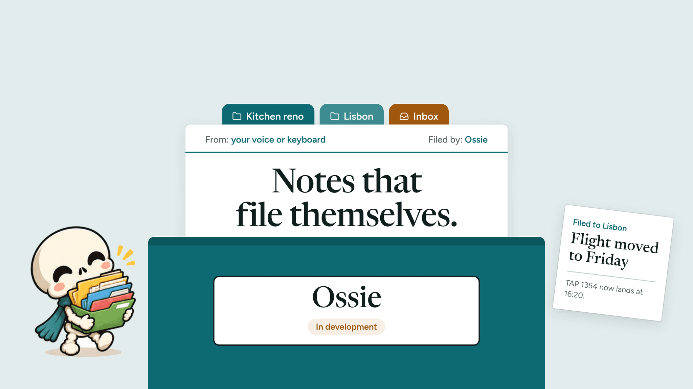
Summary
Ossie is a notes app I’m designing and building on my own. You write or say a note, and the app puts it in the right folder for you, so you don’t have to organise anything.
- The problem: Notes apps leave the organising to you. Filing takes effort, so notes pile up and get harder to find.
- What I did: Designed every screen and built a working app for iPhone and Android. Partway through, I changed direction from an iPhone-only app to one that runs on both.
- The result so far: On iPhone, a new note files itself using the AI built into the phone, so notes stay private. If the app isn’t sure, it says so and leaves the note in an Inbox with a suggestion.
- Still to do: Ossie isn’t released yet, so there are no usage numbers. Android can’t file notes automatically yet, and accessibility checks on real devices aren’t finished.
Tools: Flutter, Apple Foundation Models on iOS, speech_to_text, local storage. Designed in doop.design.
Status: In development. Not in the App Store or Google Play yet. It will be the latest addition to the apps section here on CarbonStroke.
Overview
Ossie is a notes app built around one goal: get a thought down and find it later, without having to organise anything. I started it because of the limitations and friction in today’s notes apps, which make keeping notes harder than it should be. You write or speak a note, and the app files it into the right folder for you. You don’t set up folders first, and on iPhone the filing happens on the device, so your notes stay on your phone.
This case study covers an app that isn’t finished. There are no usage numbers yet, so I judge it against the goals that came out of that friction. It covers how the design changed in doop.design, why the app moved from native iOS to Flutter, and what still doesn’t work.
The friction in notes apps
Writing a note takes seconds. The work comes after it, because notes apps leave the organising to you. These are the limits that made me want to build a new one:
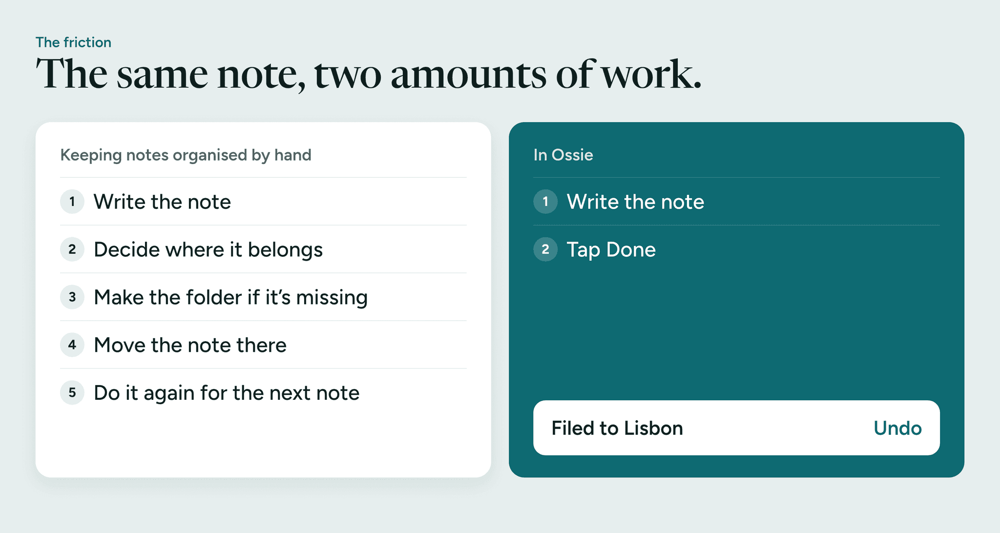
- Every note asks where it should go. Filing turns a quick thought into a decision, at the moment you least want to make one.
- Folders need building and upkeep. They have to exist before they help, and keeping them tidy takes time away from writing. It’s easy to give up and end up with one long list.
- Automatic sorting is hard to trust. If you can’t see where a note went or undo it, you stop believing it’s where you left it.
- Voice notes end up somewhere else. A recording often lives apart from your written notes, so you have two places to look.
- AI help often means a server. Tools that can sort your notes usually do it by sending them to someone else’s server.
None of this is about writing. It’s the work around writing, and that’s the work I wanted to remove. For Ossie, ease of use means fewer decisions and less upkeep.
Goals
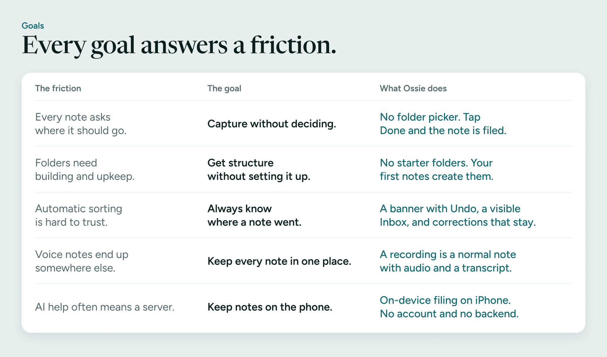
Each goal comes from one of those frictions, and the goals decide what belongs in the app. If a feature adds a decision while you’re capturing, or setup before your first note, it doesn’t fit.
The hard question behind all of them: can a phone keep its own folders tidy, using only the AI built into the phone, and be honest enough about its mistakes that you still trust where things are?
How it works
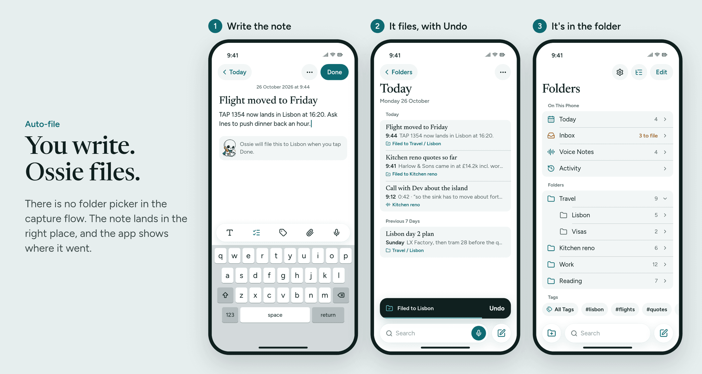
- Write or talk: a new note opens as a full page, with no folder picker. While you type, a line says where Ossie plans to put it.
- Auto-file: when you tap Done, the note goes into a folder and gets tags without asking first. A banner says where it went and offers Undo.
- Inbox: if Ossie isn’t sure, the note waits in the Inbox with a best guess. Swipe to accept it, or tap File All.
- Activity: a 30-day log lists what was filed, tagged or moved.
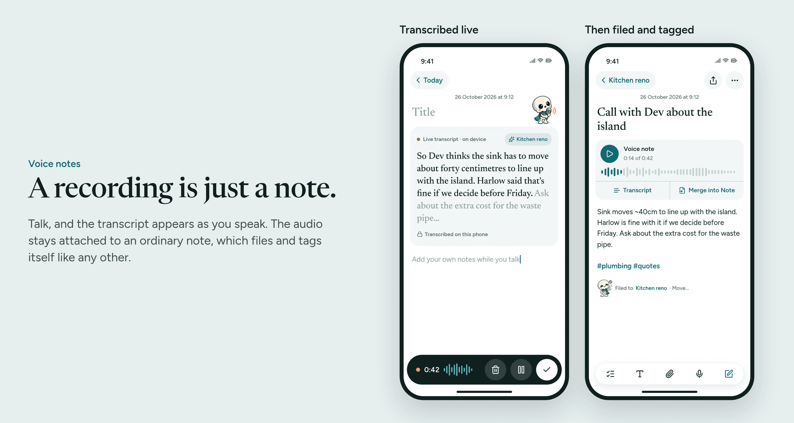
A voice note isn’t a separate type of item. It’s a normal note with audio and a transcript attached, so it files, tags and searches like any other, and there’s only one place to look.
Designing it in Doop
All of the screens were designed in doop.design, on one design board that still holds every earlier version. That history is why I can show the changes here. The screens in this case study are copies from that board, with the sample notes rewritten so each image shows one idea.
1. All the screens before any app code
The first pass covered 19 screens: first run, Today, recording, the editor, the library, the Inbox, Activity, Settings and four empty states. I also mapped where each pose of the app’s mascot would appear.
2. Colour and type, compared side by side
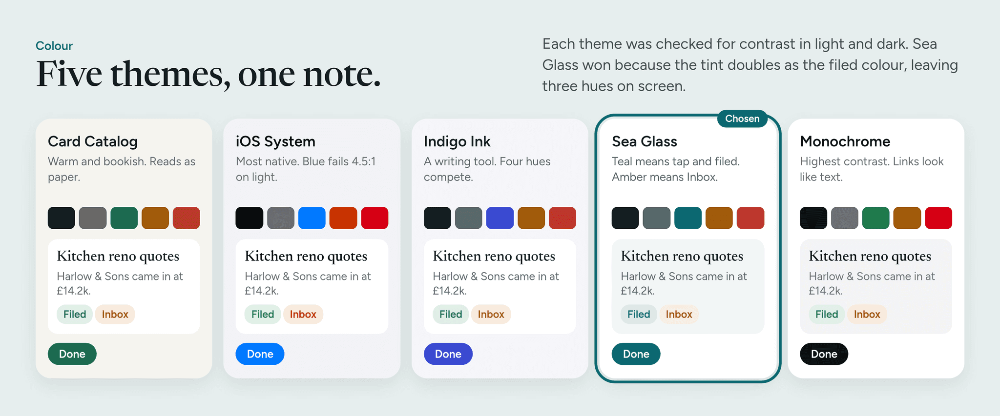
I tried five colour themes on the same note and checked that the text was easy to read in each one, in light and dark. iOS System looked most like a standard iPhone app, but its blue was too faint on light backgrounds, below the 4.5:1 contrast that accessibility guidelines ask for. Sea Glass won because its teal means both “you can tap this” and “this was filed”, which leaves amber for the Inbox and red for delete.
I compared five font pairings as well. The recommended option was Apple’s own fonts, New York with SF Pro. I chose Newsreader with Figtree instead, because they look the same on iPhone and Android and give the app a more distinct voice. The cost is extra work: packaging the fonts with the app and making sure they resize properly.
3. Checking the design against Apple’s guidelines
A second pass rebuilt every screen against Apple’s design guidelines, the Human Interface Guidelines: a floating menu bar at the bottom, buttons big enough to tap easily, and a dark version of each screen.
4. Changing the structure
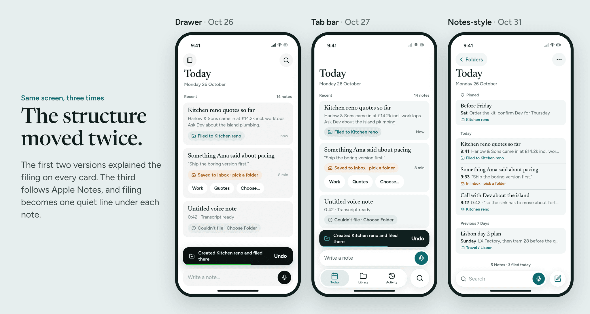
The biggest design change came last. The tab bar version was tidy, but it was still a custom app that people had to learn, and that’s friction too. I redesigned it to work like Apple Notes: Folders is the main screen, the app opens on Today, notes sit in simple grouped lists, and the search and new-note buttons sit at the bottom.
The trade-off was deliberate. iPhone users already know this layout, but filing gets quieter. Where each note went is now a single line under its title, not a large pill. The banner with Undo still appears at the moment of filing.
5. From design to working app
The 12 final screens became the blueprint for the app, which moved to the new layout on November 4. The code still uses the design file’s screen names, so any screen can be traced back to its design.
Changing direction: from iPhone-only to both platforms
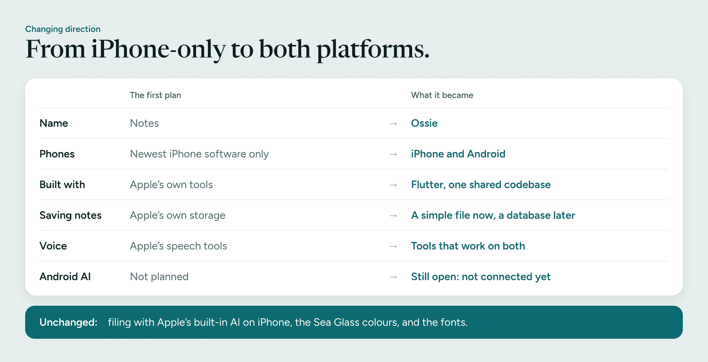
Ossie started as an iPhone-only app called Notes, built with Apple’s own tools. I switched to Flutter, a tool that builds iPhone and Android apps from the same code, for two reasons: the goals aren’t specific to iPhone, so reaching both made sense, and the animations in the designs, like the filing banner, only have to be built once.
The visual design carried over unchanged, and the iPhone version still uses Apple’s built-in AI. The switch also had real costs:
- Android can’t auto-file yet. I haven’t connected an on-device AI for Android yet, so notes wait in the Inbox with simple suggestions based on their words. Capturing without deciding isn’t true on Android yet.
- Storage got simpler, for now. Notes are saved in a basic file today. That has to change to a proper database before people have lots of notes.
- Voice has to be proven on real phones. Recording and live transcription now share the microphone, and that needs testing on real devices.
Key design decisions
Each decision below serves one of the goals, and most of them cost something.
1. The AI commits, and you can undo
Goal: capture without deciding.
Ossie never asks before filing a new note, because a question at the moment of capture is exactly the work the app is meant to remove. Instead, filing is always reversible. Each outcome gets its own banner, and Undo stays up for about 8 seconds.
2. Admit uncertainty
Goal: always know where a note went.
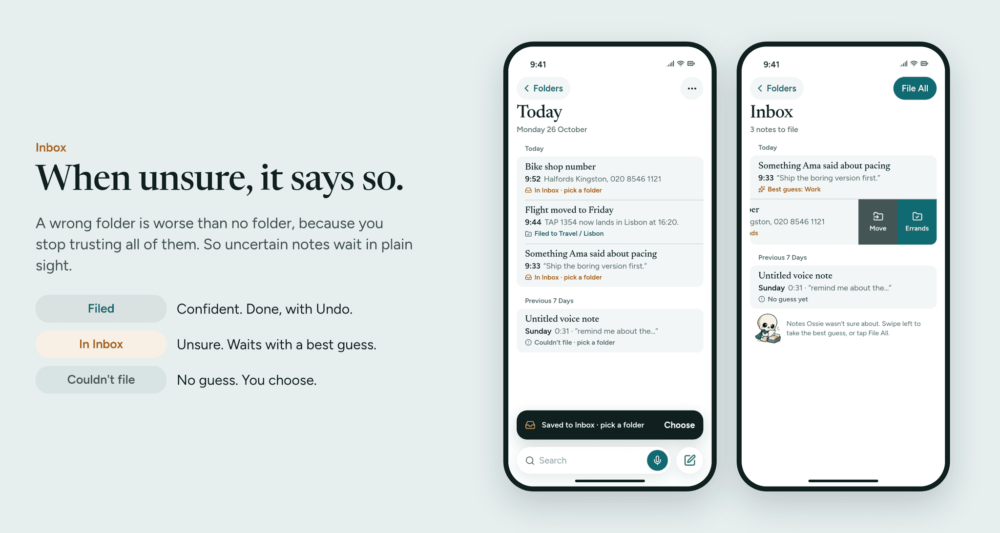
A wrong folder costs more than no folder, because one misfiled note makes you doubt all of them. So a low-confidence note goes to a visible Inbox with a best guess, and clearing it takes one swipe. If there’s no guess at all, the app says that too.
3. A correction is final
Goal: always know where a note went.
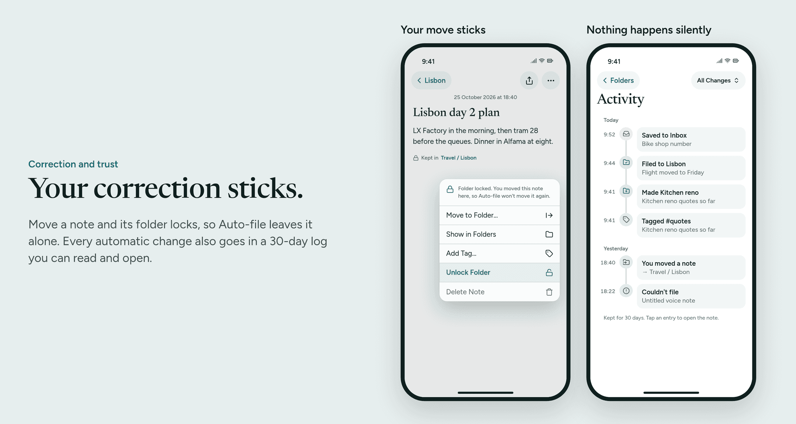
When you move a note, its folder locks and Auto-file won’t touch it again. The app doesn’t learn from this yet: the correction applies only to that note, which keeps it easy to explain. Activity only records changes. Every correction happens on the note itself, so there is one place to learn.
4. On-device first, with an honest fallback
Goal: keep notes on the phone.
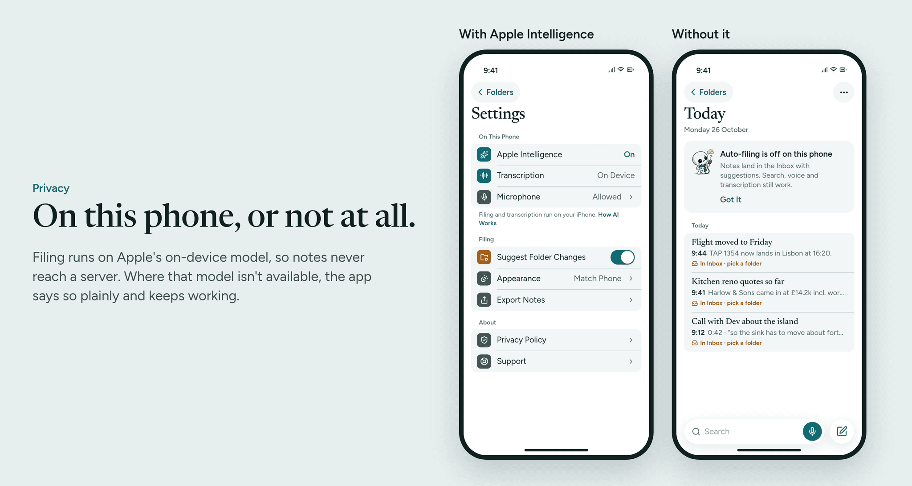
Filing uses the AI built into iPhones, Apple’s Foundation Models. That limits how smart it can be, but it means no account, no company server and no notes leaving your phone. On a phone without that AI, a one-time message explains that auto-filing is off, while writing, voice and search keep working.
For those phones I’ve also decided to let people connect their own AI account, where note content goes only to the provider they choose. That is a written decision, not a built feature.
5. Notes stored inside the app, not as separate files
Goal: keep every note in one place.
Saving each note as a separate file would make notes easy to move and open in other apps. But a note here can carry audio and a transcript as well as text, and search has to work across all of it, so notes and folders are stored inside the app. The cost is that other apps can’t open your notes directly.
Reviewing my own work
Before going further, I reviewed every screen against WCAG 2.2, the standard accessibility guidelines, and common usability principles. The main finding was uncomfortable: the app promises that notes file themselves, but a confident filing showed no feedback at all. That broke the goal of always knowing where a note went.
- 6 blockers: serious problems, including a main “Write a note” label too faint to read easily, rows that got cut off at large text sizes, animations that ignored the phone’s Reduce Motion setting, and buttons a keyboard couldn’t reach.
- Undo was too short: 5 seconds against the planned 8, which is especially hard for people using a screen reader.
- Deleting was final while moving wasn’t: deletes now offer Undo too.
- Search overclaimed: the app promised search by meaning, but it only matches words. The wording now says what it does.
All of these are fixed, apart from two exceptions I kept on purpose. I did the review by reading the code, and the app has since run on an iPhone. It still hasn’t been checked at the largest text size, with a screen reader, or on Android, so I’m not calling it accessible yet.
Where it stands against the goals
- Capture without deciding. Works on iPhones with Apple’s built-in AI. On Android, notes still wait in the Inbox for you to file.
- Get structure without setting it up. Folders start empty and grow from your first notes on iPhone. It still has to prove itself with a large number of notes.
- Always know where a note went. The banner, Inbox, folder locks and Activity log are built. There’s no usage data yet to show that people trust them.
- Keep every note in one place. Voice notes already file and search like written ones, but recording still has to be proven on real phones.
- Keep notes on the phone. True today: filing runs on the phone, with Apple’s built-in AI on iPhone and simple word-based suggestions on Android.
What’s next
- Check accessibility on real devices: largest text size and screen readers.
- Connect an on-device AI on Android so it can file notes automatically.
- Move notes to a proper database so the app copes with lots of them.
- Build search by meaning, and the option to connect your own AI account.
- Release on the App Store and Google Play.
Ossie is in development. It’s coming to the apps section here on CarbonStroke.
More work
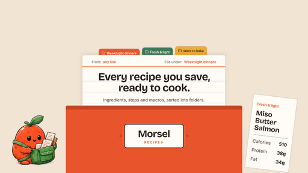

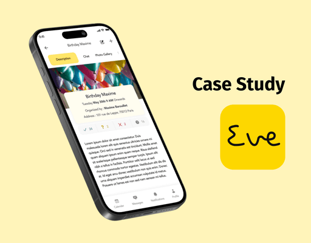